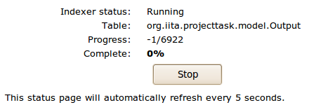

Application uses Apache Lucene to provide full-text search functionality. Data is automatically reindexed by the application as changes occur. Even so, re-indexing application data is sometimes required.
Warning: Reindexing may take a long time!
Application data needs to be reindexed in following cases:
Reindexer tool allows you to reindex only relevant parts of the database. Select the data you want reindexed and click Reindex button.
 Reindexing in progress
While reindexing is in progress, nobody can schedule another reindexing job until the one running is completed.